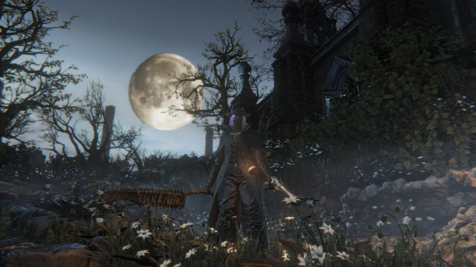
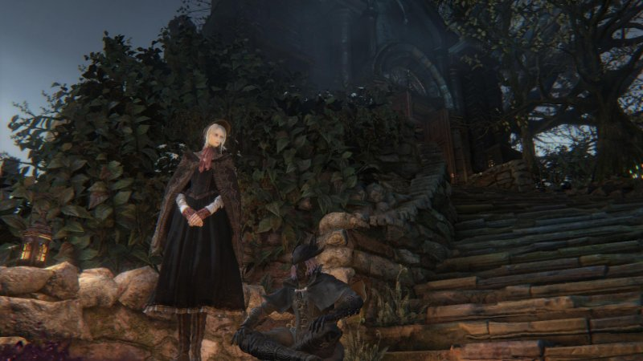
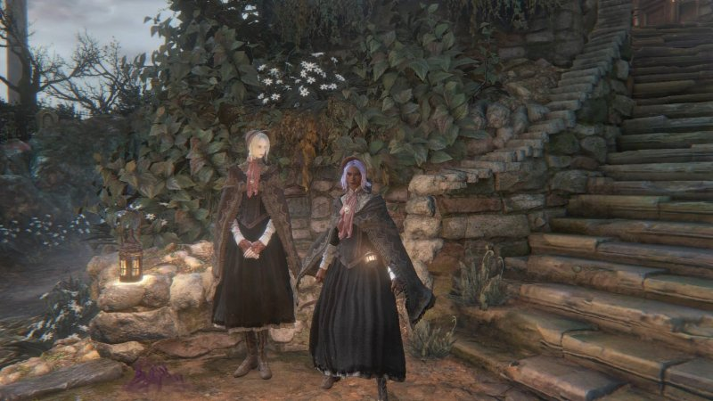
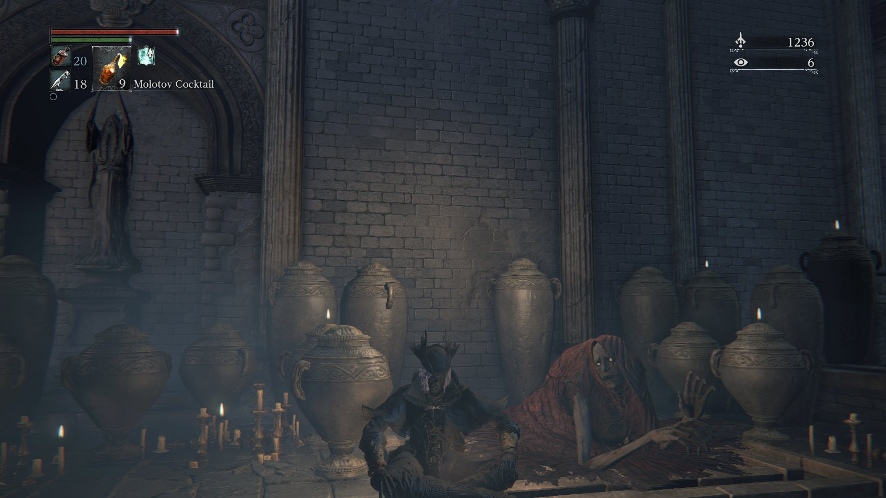
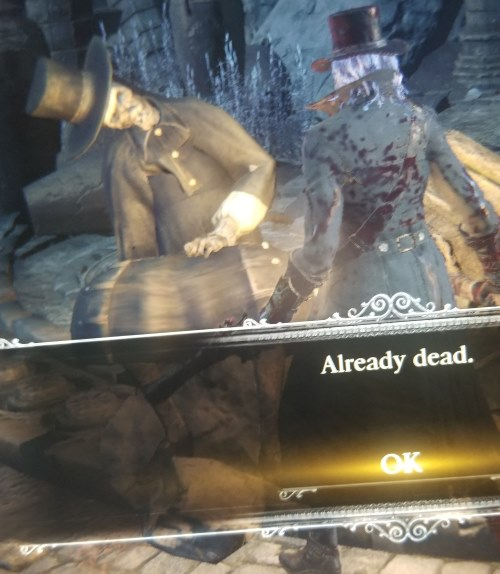

bloodborne
logs
08.jul.23been playing bloodborne recently and YEAH its pretty scary (for someone like me) but it is so fun!!!!! i had given this game a try back when it was free for ps+ in 2018 and i did like it but every time i died i felt horrible so i stopped playing it LKFJDLj but since i got ps+ again i decided to give it a try once more. and i think this time it hit me. my girlfriend has also been helping me out giving me tips and tricks throught my journey YAY!
i have much more to write about this game but soon i will be publishing an in-depth blog post about bloodborne and my experience with it so please stay tuned for that!
16.jul.23wrote a blog post about my experience with bloodborne and anxiety. this game has helped me out with coming to come to terms with some things about myself and gave me a new perspective on my own struggles  if you'd like to read it you can do so here!
if you'd like to read it you can do so here!
in other news, i've been progressing a lot through the game! im about to go to the forbidden woods (i think its the game...) and also i think i might be a bit overleveled so i should be good to go 
20.jul.23today i got to cainhurst castle! (happy but also shivering from fear) you know ive noticed that im always VERY tense when playing this game. its crazy bc i do enjoy it but oh my god. i really cant deny that despite getting the hang of this game it is still Really scary for me  its like i love it because the atmosphere is so well made but i also hate how it makes me feel so much
its like i love it because the atmosphere is so well made but i also hate how it makes me feel so much  gripping my ps4 controller for life
gripping my ps4 controller for life

i liked the view here tho. nice place to take a quick breather. only for me to get scared in the next 10 seconds PLEASEEE
as you can see i really but really take my time getting through these levels (tho theres some rare cases where i just have to say fuck it and run pass them). while exploring this place theres these ladies with swords (honestly good for them i guess) and they are VERY slow but all of a sudden this happened and i went NOPE, me and my 20k echoes are outtie. yall take it easy. i had just unlocked a shortcut too so it seemed quite fitting to stop the journey there
right after this i spent exactly 8 minutes fighting like 10 5ft long worms. horrible i know. i hope i never encounter them again in another level because wow were they such a pain for just being skinny ass WORMS
23.jul.23SO. i beat another boss!! my heart wanted to get out of my chest on this one good lord. i tried my best not to panic and it REALLY paid off. this fight was sooo long for me holy moly. but i did it! i REALLY thought i was going to die and after all, this was just my first try at the boss so you know. but just WOW...
sorry for the bad mic quality i didnt have it out but i forgot to mute it DFJLFD. you can hear my stress and desperation to just finish this damn fight
i unlocked the next area as well, but i think i will keep exploring the forbidden woods, and maybe even that castle i went to a couple of days ago before proceeding to the next area
04.sep.23soooooooooo you might be wondering what has happened to bloodborne after me playing nonstop for the entirety of july welp... i wrote about my woes with my ps4 in a journal log if you'd like to read more about it. but basically, the ps4 controller does not want to connect to it due to a faulty bluetooth / wifi antenna. sigh  honestly, i barely play on it nowadays so like if this were the end of my ps4 i'd be like damn... but okay. BUT I STILL NEED TO FINISH BLOODBORNE!!!!!!!!!!!!!! i bought a replacement for the antenna so i'll update this page to let yall know how that went and if my bloodborne journey (ps4 exclusive btw) ends here
honestly, i barely play on it nowadays so like if this were the end of my ps4 i'd be like damn... but okay. BUT I STILL NEED TO FINISH BLOODBORNE!!!!!!!!!!!!!! i bought a replacement for the antenna so i'll update this page to let yall know how that went and if my bloodborne journey (ps4 exclusive btw) ends here  i miss playing it a bit too! so i hope i can get that fixed
i miss playing it a bit too! so i hope i can get that fixed
but to catch up where i last left in the game before my ps4 decided to hate me: i explored a bit more of the cainhurst (? idk if that's how it spelled) castle and found a boss with a VERY cool scythe but oh my god... this one is going to be ROUGH. he's not that fast but he is pretty quick in executing his moveset. and i am very used to my hunter axe but i can tell it's gonna be a bit troublesome to defeat him with the slow weapon that i have.... i gave this boss a try 3 times. i think all those times i got him to half health. which isn't bad. but also the fact that we are fighting on a roof makes things even more stressful because in one of my runs i died CUS I FELL from said roof :[
it is safe to say that IF i can get my ps4 fixed again, i will need a GOOD warmup before i try to fight that boss again. UGH but i do miss bloodborne a normal amount </3 so sad
14.sep.23no more bloodborne til further notice
11.dec.23 i don't know why i just thought about this but i think if i a bought a WIRED ps4 controller, i Would Be Able to play bloodborne again..... don't really feel like dropping 20 bucks just for that though. i really like the little messages people place in these games and if i play again i won't have that </3 so yeah i don't have much desire to buy that controller despite me missing the game! i thought about getting my ps4 fixed that first week it went nuts, but at that point i might as well just wait 5 years or something until i can afford a ps5. ahhhh 
reference links
screenshots
    videos
this has been the funniest death i've had since playing this game [16.jul.23]